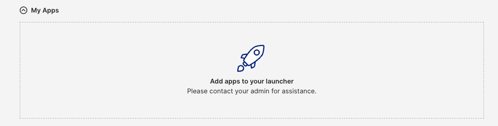
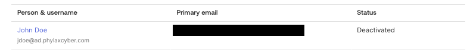
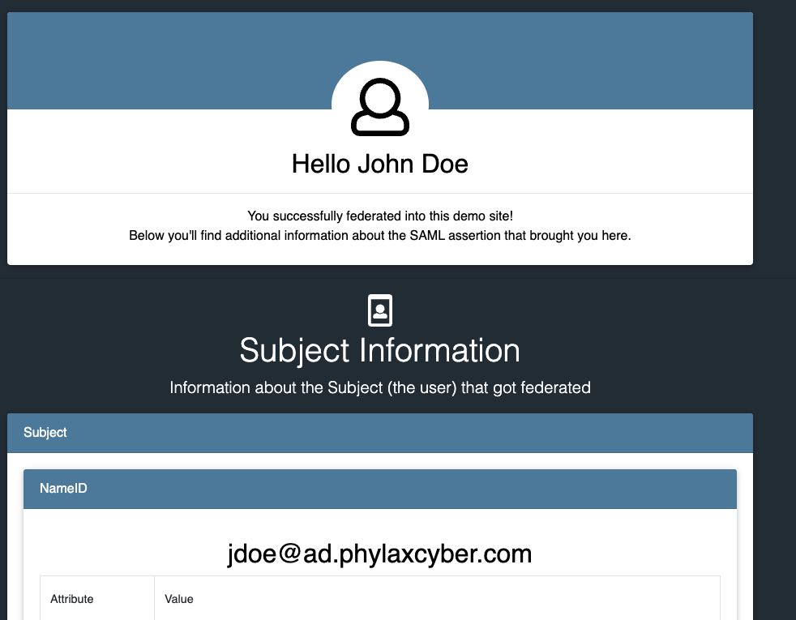

Establish the directory
Configure the AWS network and SSM access, promote Windows Server to a domain controller, validate DNS, and create dedicated user and group OUs.
I connected a Windows Server Active Directory environment on AWS to Okta, then tested how directory changes grant, revoke and restore application access.
The lab uses self-managed Active Directory, not AWS Managed Microsoft AD. A single EC2 server hosts AD DS, DNS and the Okta AD Agent for the domain ad.phylaxcyber.com.
The AD Agent connects outbound to Okta over HTTPS. AD validates the user's password; Okta applies authentication policy and issues the SAML assertion. Group membership determines who receives the application assignment.
Configure the AWS network and SSM access, promote Windows Server to a domain controller, validate DNS, and create dedicated user and group OUs.
Register the AD Agent, scope imports, and confirm the synthetic John Doe account. Import the AD-sourced Okta-Users security group.
Test AD delegated authentication, synchronize a reachable email attribute, complete email verification, and launch the group-assigned RSA SAML app.
Remove John from Okta-Users in AD and import the change. The application tile disappears while the Okta identity remains active.
Disable the AD account and import its status. Okta shows the linked user as Deactivated, demonstrating the separate account lifecycle control.
Enable AD, confirm the import with auto-activation, restore group membership, and import again. The application returns and SAML login succeeds.
These original lab screenshots show the resulting states. Personal mailbox addresses and internal identifiers have been removed. John Doe is a synthetic test identity.


Group membership was restored, the application was reassigned through the group, and the RSA demo service accepted the SAML login.
The returned NameID was jdoe@ad.phylaxcyber.com. This is the lab login identity, not the private mailbox used for email verification.
View the full evidence and commands →
| Capability | What this lab established |
|---|---|
| Directory integration | AD DS/DNS, agent registration, user/group import and the email attribute update were reported successful in the lab record. |
| Authentication | AD delegated authentication and email verification completed. Email verification is not phishing-resistant. |
| Authorization | AD group membership controlled application assignment. Removing membership removed the app tile after import. |
| Identity lifecycle | AD disablement led to Okta deactivation. Reactivation required import confirmation with auto-activation in this run. |
| Federation | The RSA demo accepted SAML login after restoration. Existing service-provider session termination was not tested. |
The PDF distinguishes directly captured screenshots from reported outcomes. Earlier setup images were unavailable in the conversation export; they are not presented as recreated evidence.
Use redundant domain controllers in private subnets, separate agent hosts, controlled egress and phishing-resistant authentication. Test offboarding against active application sessions, monitor imports and verify failure recovery. None of these extensions is claimed as completed.
The single server must run for imports and delegated authentication. Stopping it reduces compute usage, while EBS and retained Elastic IP costs can continue. Review credits, Windows EC2 pricing and retained resources. Rotate credentials exposed during lab troubleshooting, retire the integration safely and release unneeded infrastructure. Cleanup completion was not evidenced.
A 14-page, public portfolio edition with the architecture, AD setup, Okta integration, lifecycle tests, security caveats, costs, cleanup and vendor references.